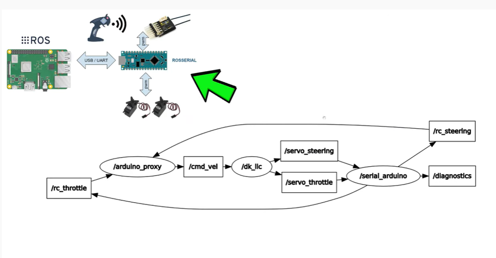

Project Overview
The Autonomous Guided Vehicle (AGV) project focused on designing and manufacturing a fully autonomous indoor navigation system. This involved creating a complete platform capable of operating independently in structured environments with minimal human intervention.
System Architecture & Project Scope
The project integrated mechanical, electronic, embedded-control, computer-vision, and robotic-navigation subsystems into a single platform. An Arduino Mega handled low-level actuation and motor control, while ROS distributed perception and decision-making tasks across independent software nodes. The implementation combined camera-based perception, LiDAR sensing, serial communication, PWM motor control, electrical system redesign, and autonomous navigation research using a structured engineering methodology with specialized responsibilities, defined deliverables, documented interfaces, and incremental subsystem integration.

Team presentation and stakeholder demonstration
Key Technical Responsibilities
- Mechatronic Redesign: Comprehensive CAD modeling in SolidWorks, incorporating dimensional constraints, component clearances, tolerances, and protection of electrical hardware. Designed new covers, enclosures, structural panels, and cargo baskets with consideration for PVC thermoforming and MDF prototyping
- Electrical System Architecture: Complete electrical architecture modeled in Proteus with 48V power distribution (4×12V batteries in series), DC-DC conversion, microcontroller subsystems, and dedicated circuit diagrams for traction, steering, braking, and Arduino I/O pin distribution
- Embedded Motor Control: Replaced relay-based actuation with BTS7960 H-bridge motor drivers for significantly faster response. Implemented PWM-based motor control with Arduino managing duty cycles according to ROS commands
- Modular ROS Architecture: Developed a ROS publisher/subscriber architecture with independent nodes for camera acquisition, image processing, decision logic, and embedded communication, reducing coupling and defining clear interfaces
- Computer Vision Pipeline: Implemented perception with Python, OpenCV, and ROS Image messages. Created color-detection algorithm transforming BGR to HSV color space, generating threshold masks, extracting contours, and classifying red/green objects for binary control commands
- Hardware/Software Integration: Connected high-level ROS with embedded Arduino using rosserial and Arduino ros_lib library, creating complete control chain: camera → image processing → ROS aggregation layer → rosserial → Arduino PWM control
- LiDAR & SLAM: Integrated RPLidar A3 with ROS and Hector SLAM for simultaneous localization and mapping, generating occupancy grids for autonomous navigation
- Path Planning: Evaluated autonomous route generation using Rapidly-exploring Random Tree (RRT) algorithms and validated navigation logic with TurtleBot3 simulation before physical deployment
- Team Leadership: Coordinated a multidisciplinary team of 11 engineers across mechanical, electrical, and software domains with iterative design–implement–test–integrate methodology
Technical Implementation Highlights
Hardware Architecture: The vehicle was redesigned around modular architecture with centralized protected enclosure for electronics. Motor control was optimized by replacing relay modules with H-bridge drivers, connecting high-level ROS perception decisions to deterministic embedded actuation through PWM control.
Software Stack: The robotics software employed incremental development using ROS nodes written in Python and C++. Initial validation used simple Publisher/Listener patterns with `rospy`, evolving into a modular architecture separating perception, decision-making, and actuation. The camera publisher continuously captured frames through `/video_frames` topic while processing nodes used OpenCV for BGR-to-HSV transformation, contour extraction, and area-based filtering (~3,000 pixel threshold).
Perception & Navigation: The 360-degree LiDAR scans were visualized in RViz and connected to Hector SLAM for real-time mapping and localization. Environmental occupancy grids were generated for RRT path planning, establishing the complete autonomous navigation stack from sensor acquisition through route generation.
Integration & Validation: The project validated individual ROS nodes, camera communication, serial interfaces, actuators, and LiDAR visualization before full integration. Successfully demonstrated computer-vision-based vehicle control (green=move, red=stop) and autonomous navigation through simulation. Full execution exposed computing-resource limitations, highlighting the importance of computational planning for real-time robotic systems.

ROS navigation architecture and node structure